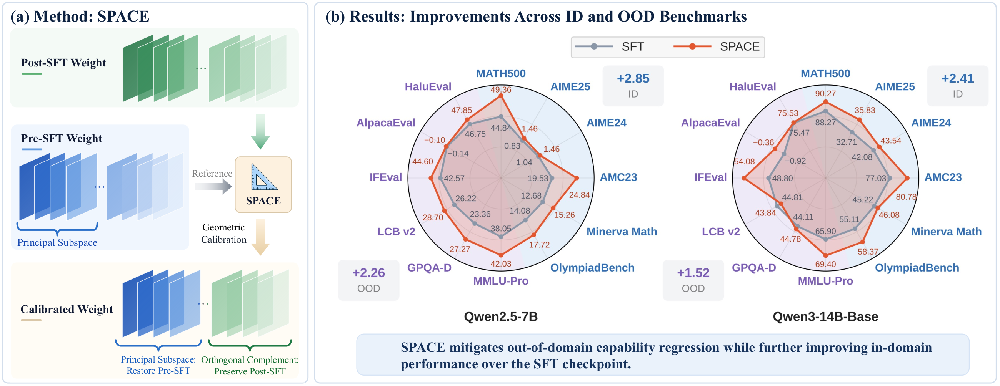
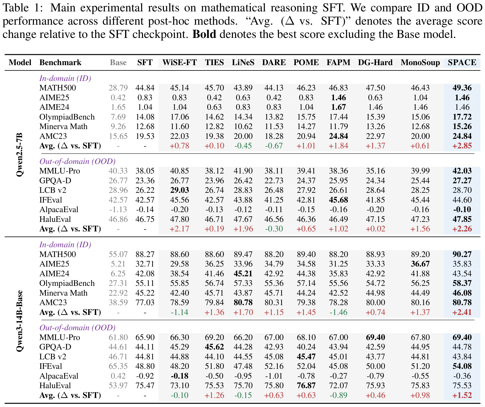
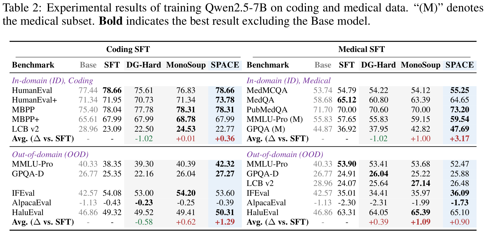
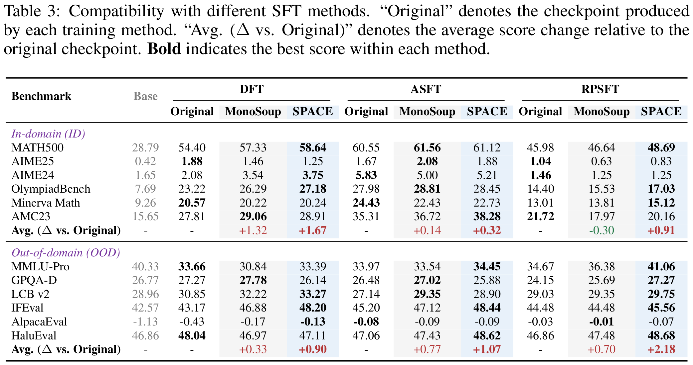
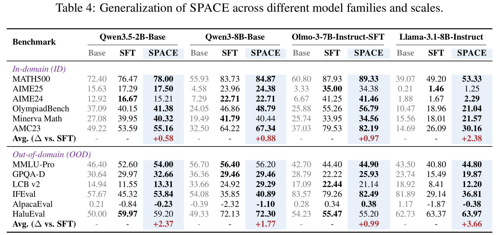

Overview
Supervised fine-tuning (SFT) adapts LLMs to target tasks but can compromise their broader capabilities. Recent studies investigate the weight geometry of LLMs through spectral structure, which characterizes how the weights transform different input directions. Within this view, SFT induces dense updates that perturb the spectral geometry of the pre-SFT weights along principal directions. These directions span a principal subspace that is considered to carry much of the model's prior or transferable knowledge.
This raises a simple question: can an SFT checkpoint be improved by removing the learned updates within these principal subspaces? More generally, the geometry of the pre-SFT weights may provide a useful reference for refining completed SFT updates. We study this perspective as Geometric Calibration and develop SPACE (Subspace Projection for Adapted Checkpoint Enhancement), a lightweight post-hoc method that selectively reverts SFT update components within the principal subspace of the pre-SFT weights while preserving those in its orthogonal complement. SPACE is a data-free, training-free method that requires only the pre- and post-SFT checkpoints.
We evaluate SPACE on Qwen2.5, Qwen3, Qwen3.5, Llama-3.1, and Olmo-3 models ranging from 2B to 14B, across mathematical, coding, and medical SFT, as well as several SFT variants. Overall, SPACE mitigates out-of-domain (OOD) capability regression while further improving in-domain (ID) performance over the uncalibrated SFT checkpoints. These results highlight how the geometric relationship between SFT updates and pre-SFT weights shapes the adapted model’s capabilities and, more broadly, motivate geometry-aware parameter updates for continual model improvement.
How SPACE works
Let W0, WSFT, and Wcal denote the pre-SFT, post-SFT, and calibrated weight matrices, respectively. Define the SFT update as ΔW = WSFT − W0. SPACE uses the pre-SFT geometry to refine the completed SFT update in three steps:
- Decompose the pre-SFT weights. Perform singular value decomposition (SVD) on W0.
- Select the principal subspace. Choose the smallest rank k capturing at least a fraction ρ of the squared singular-value energy, and the top k right singular vectors of W0 form Vk.
- Calibrate the update. Remove the update component in this subspace while preserving the component in its orthogonal complement.
We use ρ = 0.5 by default and apply calibration to all two-dimensional weight matrices.
Experimental Results







